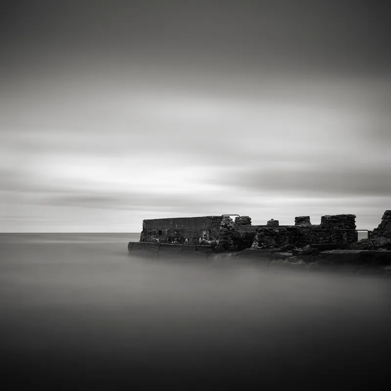
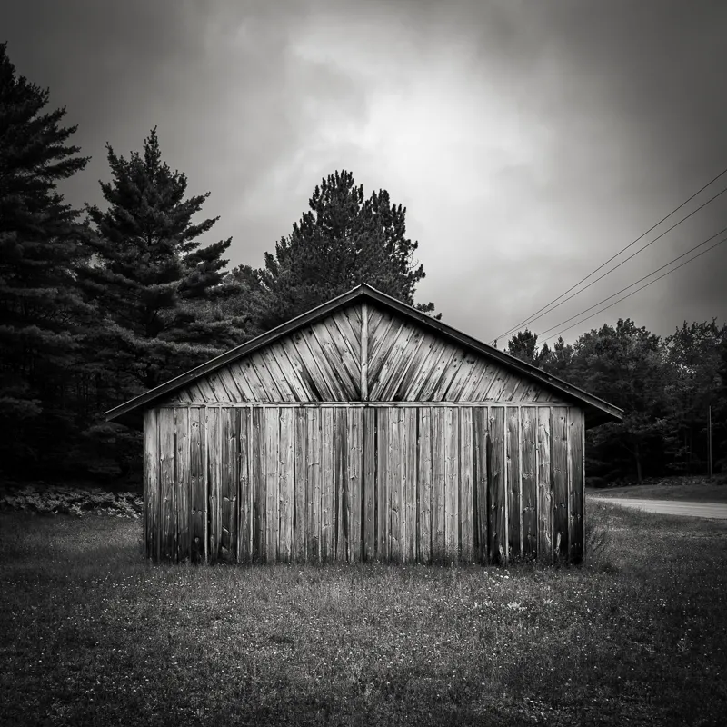

Jeff Gaydash
Photographer & Printmaker
Selected Work
CV
About
Print Studio
Contact

The Great Lakes
22 images
Architekture & Industrial
13 images
The Pacific Northwest
6 images
A Threatened Legacy
7 images

Artifakts
6 images
Calatrava
4 images